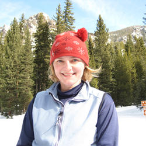

Current Members
We are a collection of statisticians in Bozeman, Montana that includes government statisticians at the US Geological Survey's (USGS) Northern Rocky Mountain Science Center (NOROCK) and Montana State University (MSU) faculty and students.
-

-

- 
-

-
Dr. Christian Stratton
-
 Meaghan Winder
Meaghan Winder -
 Carol Hardy
Carol Hardy -
Jacob Oram
-
Will Hammond